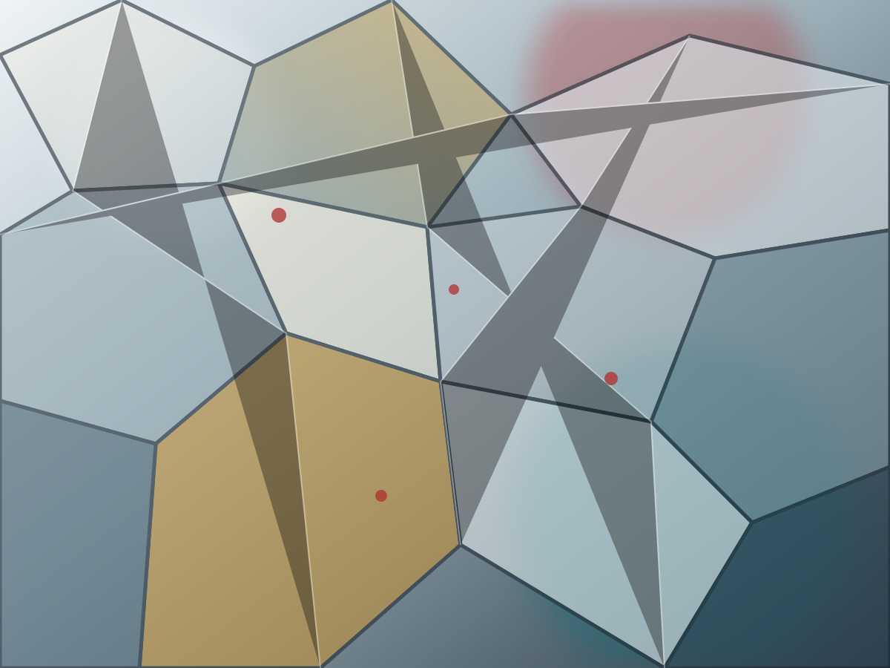

High-temperature alloys
철계 내열합금과 Ni기 초내열합금의 석출, 열안정성, 고온 강도.
공주대학교 신소재공학과
고온 금속재료, 수소취성, 초내열합금, Ti 합금 및 머신러닝 기반 소재 데이터 분석을 통해 구조재료의 미세조직과 성능을 설계합니다.

About ASML
공주대학교 신소재공학과 신구조재료실험실은 극한 환경에서 사용되는 금속 구조재료의 공정, 미세조직, 기계적 특성을 통합적으로 연구합니다. 실험 기반 분석과 데이터 기반 해석을 함께 사용해 합금 설계와 성능 예측의 연결성을 높이는 것을 목표로 합니다.
현재 홈페이지 초안에는 공개적으로 확인된 기본 정보와 연구실의 핵심 연구 방향을 우선 반영했습니다. 논문, 구성원, 장비 사진, 프로젝트 정보는 실제 자료를 바탕으로 순차적으로 업데이트할 수 있습니다.
Research Areas
철계 내열합금과 Ni기 초내열합금의 석출, 열안정성, 고온 강도.
수소 환경에서의 변형, 균열, 파괴 메커니즘과 내수소 설계.
Ti 합금 및 차세대 경량 구조재료의 공정-조직-물성 상관관계.
문헌 데이터베이스와 머신러닝을 활용한 합금 설계 및 물성 예측.
How We Work
합금 제조, 열처리, 압연 및 후처리 조건을 설계합니다.
상분율, 석출, 결정립, 결함과 균열 경로를 분석합니다.
강도, 연성, 파괴, 고온 안정성, 수소 환경 거동을 평가합니다.
문헌 및 실험 데이터를 정리해 합금 설계와 물성 예측에 활용합니다.
Join ASML
재료 실험, 미세조직 관찰, 문헌 정리, 데이터 분석을 기초부터 배웁니다.
합금 설계, 열처리, 수소취성, 고온 물성 등 독립 연구 주제를 수행합니다.
구조재료의 공정-조직-물성 상관관계를 깊게 다루고 논문 성과로 확장합니다.
관심 연구 분야와 현재 학업 단계, 가능한 시작 시점을 정리합니다.
연구실 위치 또는 전화로 연락해 면담 일정을 잡습니다.
연구 주제, 실험 환경, 대학원 진학 계획을 함께 논의합니다.
문헌 읽기, 실험 보조, 데이터 정리부터 단계적으로 참여합니다.
People
Principal Investigator
Department of Advanced Materials Engineering, Kongju National University
Graduate Students
고온합금, 수소취성, 미세조직 분석, 머신러닝 기반 소재 연구.
Undergraduate Researchers
재료 실험과 데이터 분석을 함께 배울 학부 연구생을 모집합니다.
Projects
내열합금의 상안정성, 석출 거동, 고온 기계적 특성을 연결합니다.
수소 유입, 트랩, 균열 전파와 미세조직 인자의 상관관계를 다룹니다.
Refractory multi-principal element alloy의 조성, 미세조직, 기계적 물성 데이터를 정리합니다.
문헌과 실험 데이터를 통합해 합금 조성-공정-물성 지도를 구축합니다.
Facilities
OM, SEM/EBSD, TEM, XRD 결과를 기반으로 조직 인자를 정량화합니다.
경도, 나노인덴테이션, 상온/고온 압축, 피로 거동 데이터를 정리합니다.
열처리와 후처리 조건이 상변태와 석출 거동에 미치는 영향을 추적합니다.
논문 데이터 추출, 실험 결과 정리, 머신러닝 분석을 위한 파이프라인을 구축합니다.
Data Infrastructure
논문에서 조성, 공정, 미세조직, 물성 정보를 추출해 비교 가능한 표준 형식으로 정리합니다.
시편명, 조성, 공정 조건, 열처리 이력, 시험 조건을 연결해 추적 가능성을 높입니다.
이미지와 정량 분석값을 함께 관리해 조직-물성 상관관계 해석에 활용합니다.
실험값과 문헌 데이터를 모델 학습에 사용할 수 있도록 정리하고 검증합니다.
Publications
실제 논문 목록은 Google Scholar, ORCID, 연구실 DB 또는 CV 자료 확인 후 연도별로 정리해 추가합니다.
논문 제목, 저자, 저널, 연도, DOI, 연구 주제 태그를 정리합니다.
학회 발표, 수상, 초청 발표, 학생 발표 실적을 분리해 정리합니다.
News
임성진 석사 과정 학생이 우수논문상을 수상했습니다.
구조재료, 미세조직 분석, 머신러닝 기반 소재 연구에 관심 있는 학생을 환영합니다.
Contact
구조재료, 고온합금, 수소취성, 미세조직 분석, 소재 데이터 분석에 관심 있는 학생을 환영합니다.